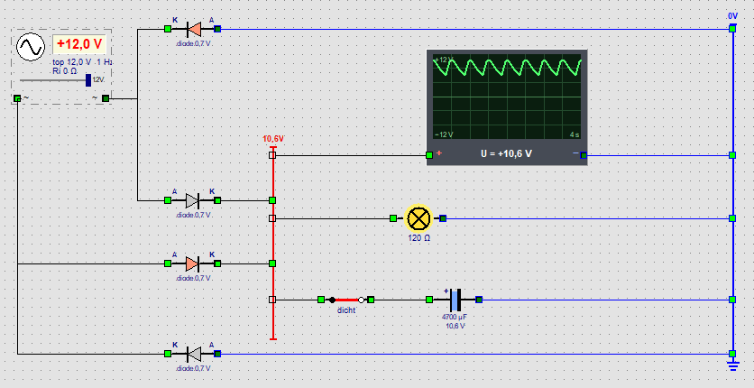

The Graetz bridge: four diodes, a lamp as the load and a branch with a switch and a 4700 µF capacitor. The oscilloscope across the lamp shows both halves, pointing up.
The bridge turns the alternating voltage into a voltage with a fixed direction. It feeds the + rail (left) and
the − rail (right). The oscilloscope, the lamp and the branch with the capacitor sit between the rails, as in
the previous lessons.
Both halves pointing up
Leave the switch open and start the simulation. The oscilloscope shows humps: every half wave, the negative ones too,
points up. In 4 seconds you see 8 of them.
Look at the diodes. When the source voltage is positive, the first and the third diode (counted from the top) conduct;
when it is negative, the second and the fourth. Each time the current flows from left to right through the lamp.
The lamp again gets bright twice per period, as in lesson 35, but the voltage across the lamp
no longer changes direction.
This is called full-wave rectification. The peak across the lamp is 12 − 2 × 0.7 = 10.6 V, because the
current always flows through two diodes.
Smoothing with a capacitor

With the capacitor: the voltage no longer drops to 0 but varies between about 6 and 10.6 V.
Switch on. The capacitor
charges at every hump and gives its charge back when the voltage drops.
The oscilloscope now shows a voltage that no longer drops to 0: it varies between about 6 and 10.6 V. That variation is
called the ripple.
Right-click to choose a smaller capacitor: with 2200 µF the voltage drops to about 4.2 V, with
1000 µF to 2.1 V. The bigger the capacitor, the smaller the ripple.
Assignment: almost DC voltage
The 120 Ω lamp draws a lot of current and discharges the capacitor quickly. Right-click to choose a 480 Ω
lamp and keep the 4700 µF capacitor on. What does the voltage look like now?
Solution
The ripple gets much smaller: the voltage only varies between about 8.9 and 10.6 V. The lamp draws less current, so the
capacitor discharges more slowly (τ = R × C = 480 × 0.0047 ≈ 2.3 s). This is how a power supply turns an AC
voltage into an almost flat DC voltage.
In real life: every charger for a phone or laptop contains such a bridge with four diodes and a
smoothing capacitor. At 50 Hz there are 100 humps per second, so a smaller capacitor is already enough.
 capacitor
charges at every hump and gives its charge back when the voltage drops.
capacitor
charges at every hump and gives its charge back when the voltage drops.